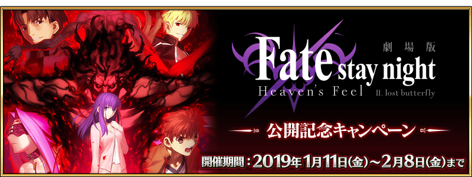
為了記念劇場版「Fate/stay night [Heaven's Feel]」 Ⅱ.lost butterfly的公開，舉辦劇場版「Fate/stay night [Heaven's Feel]」 Ⅱ.lost butterfly公開記念宣傳活動！
◆舉辦期間◆
2019年1月11日(五) 17:00～2月8日(五) 22:59
為了記念劇場版「Fate/stay night [Heaven's Feel]」 Ⅱ.lost butterfly的公開，贈送擔任劇場版動畫製作ufotable所描繪的「劇場來場特典」概念禮裝！
自2019年1月12日(六)在上映劇場版「Fate/stay night [Heaven's Feel]」 Ⅱ.lost butterfly的全國約130處電影院啟動「Fate/Grand Order」的程式，得到「劇場來場特典」概念禮裝吧！
◆領取條件◆
所有的Master對象
※新Master必須通過推進至「特異點F 炎上汙染都市 冬木 第3節」。
◆「劇場來場特典」概念禮裝◆
| 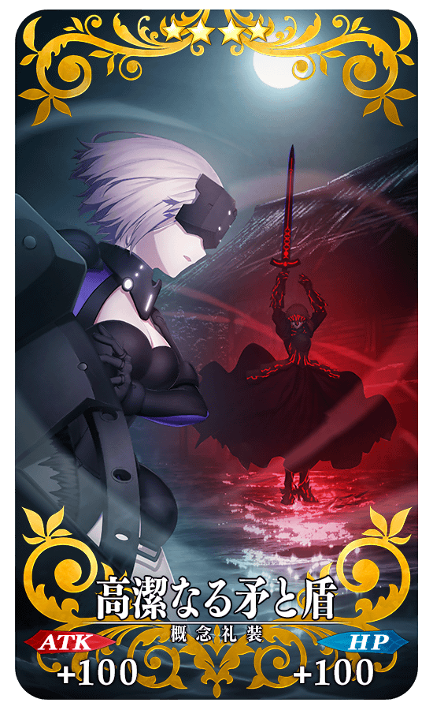 |
★★★★SR |
| 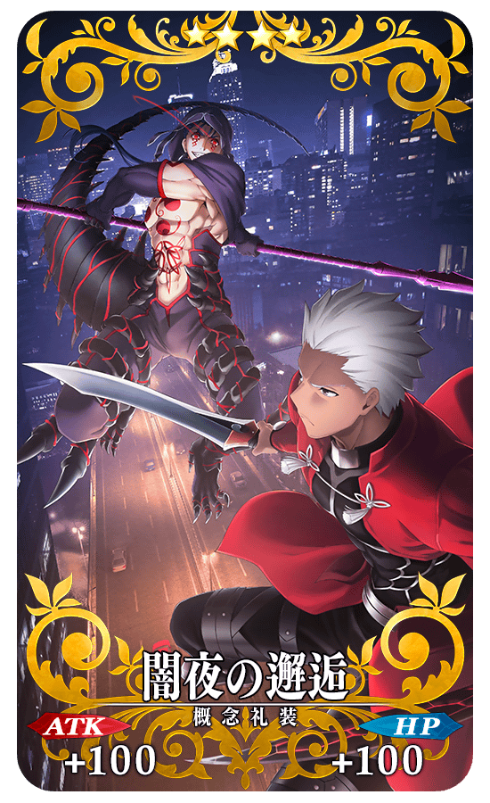 |
★★★★SR |
| 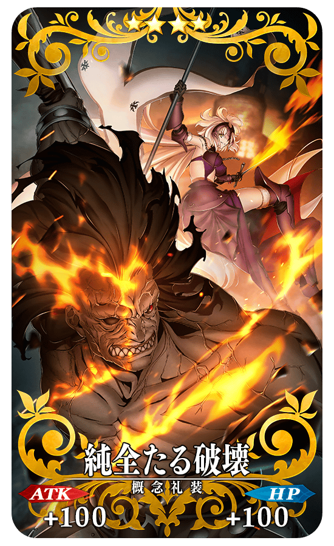 |
★★★★SR |
| 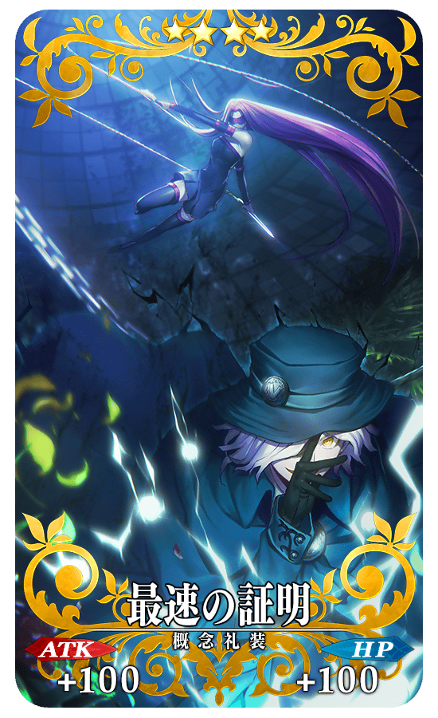 |
★★★★SR |
| 週 | 入手期間 | 來場特典 |
|---|---|---|
| 【第1週】 | 1月11日(五) 23:00～ 1月18日(五) 22:59 |
高潔なる矛と盾 1張 |
| 【第2週】 | 1月18日(五) 23:00～ 1月25日(五) 22:59 |
闇夜の邂逅 1張 |
| 【第3週】 | 1月25日(五) 23:00～ 2月1日(五) 22:59 |
純全たる破壊 1張 |
| 【第4週】 | 2月1日(五) 23:00～ 2月8日(五) 22:59 |
最速の証明 1張 |
※「劇場來場特典」概念禮裝全部有4張，每週替換。 ※請注意最多能入手全4種，超過入手期間的「劇場來場特典」概念禮裝會變為無法入手。
搜尋附近上映劇場版「Fate/stay night [Heaven's Feel]」 Ⅱ.lost butterfly的電影院，請自下述的URL確認。
https://www.fate-sn.com/theater/
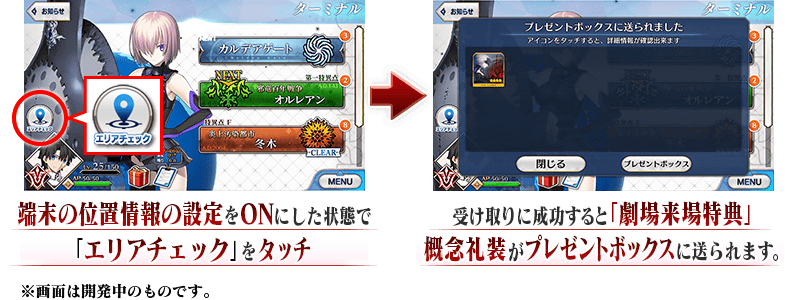
2019年1月11日(五) 23:00～2月8日(五) 22:59的舉辦期間中，在管理室(ターミナル)畫面左側會顯示「位置檢查(エリアチェック)」圖示。
在劇場內確認通訊環境後，請將使用裝置的位置情報設定調為ON。
通訊狀態不穩和位置情報設定為OFF的情況，會無法順利入手「劇場來場特典」的概念禮裝。
※訊號狀況、建物等障礙物等的影響，會有位置情報(GPS)產生誤差的可能性。
因此可能會已在舉辦區域內仍無法領取的情況，請嘗試稍微移動地點。
※領取「劇場來場特典」的概念禮裝時，請務必在上映開始前或上映結束後，於售票處和休息區進行。上映中的操作會給其他人帶來困擾，請注意絕對別進行。
※邊走邊使用智慧型手機會給其他行人帶來困擾，非常危險請自制。關於在遊玩中發生事故和糾紛不會幫負任何責任。
※給店家內的客人和周圍店家等帶來困擾的行為(佔座、大聲喧嘩、丟棄垃圾等)請自制。
※請注意在使用裝置沒有位置情報(GPS)設定的功能，無法領取「劇場來場特典」。
關於使用裝置的位置情報設定調成ON的詳細方法請在此處的公告確認。
下述的期間中，在「Master任務」的「限定」標籤內以期間限定追加「【劇場版「Fate/stay night [HF]」第二章公開記念】任務」。
通過所有任務的話，可得到指令紋章「★3(R)薄紅き虚像の令印」與聖晶石9個！
◆舉辦期間◆
2019年1月11日(五) 17:00～1月25日(五) 11:59
◆領取期間◆
2019年1月11日(五) 17:00～2月1日(五) 11:59
◆公開記念宣傳活動指令紋章◆
| 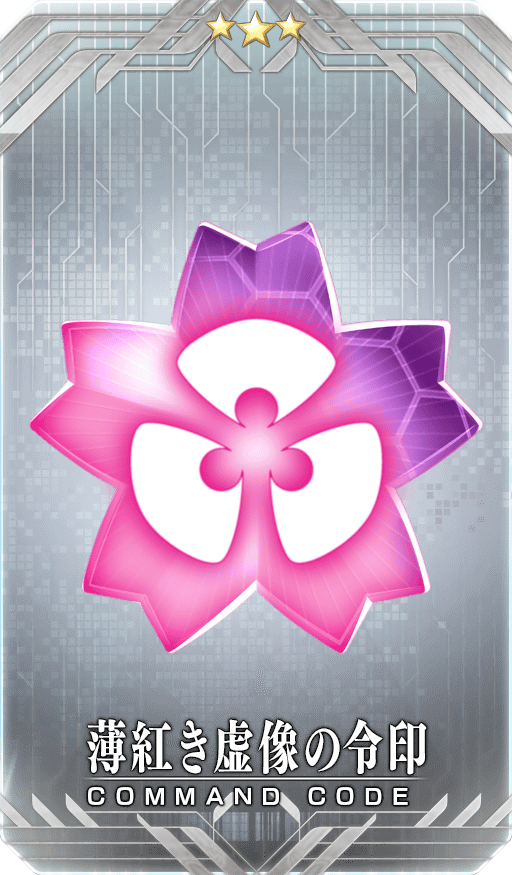 |
★★★R |
◆追加任務◆
| 任務名稱 | 任務達成報酬 |
|---|---|
| 【劇場版「Fate/stay night [HF]」第二章公開記念】 通過『特異點F 炎上汙染都市 冬木』 |
聖晶石 1個 |
| 【劇場版「Fate/stay night [HF]」第二章公開記念】 編入1位以上『Berserker』職階的Servant，通過5次任意關卡 |
聖晶石 1個 |
| 【劇場版「Fate/stay night [HF]」第二章公開記念】 編入1位以上『Rider』職階的Servant，通過5次任意關卡 |
聖晶石 1個 |
| 【劇場版「Fate/stay night [HF]」第二章公開記念】 擊倒15名持有『猛獣』特性的敵人 |
聖晶石 2個 |
| 【劇場版「Fate/stay night [HF]」第二章公開記念】 擊倒3位持有『混沌』屬性的Servant |
聖晶石 2個 |
| 【劇場版「Fate/stay night [HF]」第二章公開記念】 擊倒3位持有『秩序』屬性的Servant |
聖晶石 2個 |
| 【劇場版「Fate/stay night [HF]」第二章公開記念】 通過所有限定任務 |
★3(R)薄紅き虚像の令印 1張 |
※請注意舉辦期間與領取期間有所差異。 ※每請注意與每週日23:00更新的普通任務(Weekly)不同欄位，超過領取期間過的話無法入手報酬。 ※「就算通過【劇場版「Fate/stay night [HF]」第二章公開記念】任務」也不會計算在普通任務(Weekly)的任務進行度。
下述的期間中，有關「Fate/stay night」的一部份Servant做為對象，在進行Servant的強化時，大成功(經驗值2倍加成)・極大成功(經驗值3倍加成)的發生率以期間限定變成2倍！
無論如何請藉此機會強化有關「Fate/stay night」的11位Servant！
◆舉辦期間◆
2019年1月11日(五) 17:00～1月25日(五) 11:59
◆對象Servant◆
| 職階 | 稀有度 | Servant名 |
|---|---|---|
| Saber | ★★★★★ | 阿爾托莉亞・潘德拉剛 |
| ★★★★ | 阿爾托莉亞・潘德拉剛〔Alter〕 | |
| Archer | ★★★★★ | 吉爾伽美什 |
| ★★★★ | Emiya | |
| Lancer | ★★★★ | 帕爾瓦蒂 |
| ★★★ | 庫・夫林 | |
| Rider | ★★★ | 美杜莎 |
| Caster | ★★★ | 美狄亞 |
| Assassin | ★★ | 咒腕的哈桑 |
| ★ | 佐佐木小次郎 | |
| Berserker | ★★★★ | 海克力斯 |

下述的期間中，在關卡開始時的支援選擇畫面，選擇其他Master的對象Servant做支援情況、其他Master選擇自己的對象Servant做支援情況的友情點數獲得量變成2倍。
將好友和跟隨的Master等做為支援能選擇Servant和概念禮裝的編成列入考量，藉此機會入手更多友情點數吧！
◆舉辦期間◆
2019年1月11日(五) 17:00～1月25日(五) 11:59
◆對象Servant◆
| 職階 | 稀有度 | Servant名 |
|---|---|---|
| Saber | ★★★★★ | 阿爾托莉亞・潘德拉剛 |
| ★★★★ | 阿爾托莉亞・潘德拉剛〔Alter〕 | |
| Archer | ★★★★★ | 吉爾伽美什 |
| ★★★★ | Emiya | |
| Lancer | ★★★★ | 帕爾瓦蒂 |
| ★★★ | 庫・夫林 | |
| Rider | ★★★ | 美杜莎 |
| Caster | ★★★ | 美狄亞 |
| Assassin | ★★ | 咒腕的哈桑 |
| ★ | 佐佐木小次郎 | |
| Berserker | ★★★★ | 海克力斯 |
※請注意NPC Servant即使是對象Servant也在友情點數獲得量2倍的對象外。
為了記念劇場版「Fate/stay night [Heaven's Feel]」 Ⅱ.lost butterfly的公開，以期間限定復刻魔術禮裝「2004年的碎片」的獲得關卡！
舉辦期間中，通過在迦勒底之門內出現的「魔術禮裝關卡・2004年的碎片」的話，可入手魔術禮裝「2004年的碎片」。
◆舉辦期間◆
2019年1月11日(五) 17:00～1月25日(五) 11:59
◆參加條件◆
所有的Master都能參加
※新Master必須通過推進至「特異點F 炎上汙染都市 冬木 第3節」。

※已經持有魔術禮裝「2004年的断片」的情況，就不會出現「魔術禮裝關卡・2004年的碎片」。 ※請注意・2004年的碎片獲得關卡沒有文字冒險部份。
◆「劇場版「Fate/stay night [Heaven's Feel]」 Ⅱ.lost butterfly公開記念Pick Up召喚」期間◆
期間:2019年1月11日(五) 17:00～1月25日(五) 11:59
為了記念劇場版「Fate/stay night [Heaven's Feel]」 Ⅱ.lost butterfly的公開，舉辦期間限定「劇場版「Fate/stay night [Heaven's Feel]」 Ⅱ.lost butterfly公開記念Pick Up召喚」！
本次是從有關劇場版「Fate/stay night [Heaven's Feel]」 Ⅱ.lost butterfly的Servant之中，「★5(SSR)阿爾托莉亞・潘德拉剛(Saber)」「★4(SR)阿爾托莉亞・潘德拉剛〔Alter〕(Saber)」「★4(SR)海克力斯」「★3(R)美杜莎(Rider)」Pick Up！
詳情請在聖晶石召喚畫面左下的召喚詳細確認。
◆有關Servant的注意◆
※阿爾托莉亞・潘德拉剛(Saber)、阿爾托莉亞・潘德拉剛〔Alter〕(Saber)、海克力斯、美杜莎(Rider)在Pick Up期間結束後仍會在故事召喚被抽出。
※Pick Up期間中，阿爾托莉亞・潘德拉剛〔Alter〕(Saber)就算通過章節前也能入手。
Pick Up期間中，Pick Up Servant的出現機率提升！
10次召喚中確定1張★4(SR)以上和確定1位★3(R)以上的Servant！
※確定★4(SR)以上包含Servant和概念禮裝。
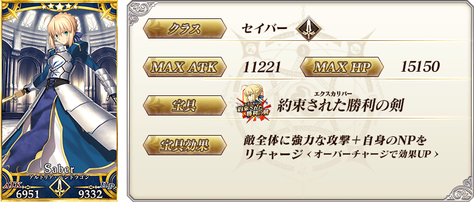
※上述「★5(SSR)阿爾托莉亞・潘德拉剛(Saber)」的卡面為靈基再臨第2階段。
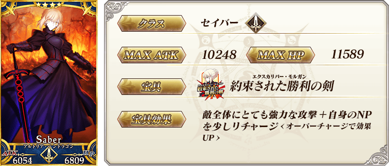
※上述「★4(SR)阿爾托莉亞・潘德拉剛〔Alter〕(Saber)」的卡面為靈基再臨第2階段。
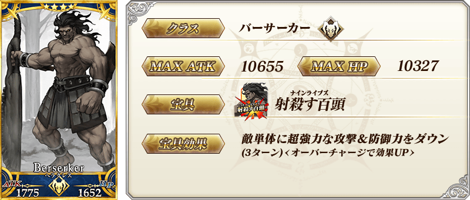
 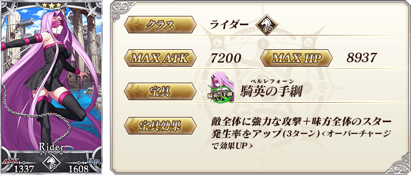
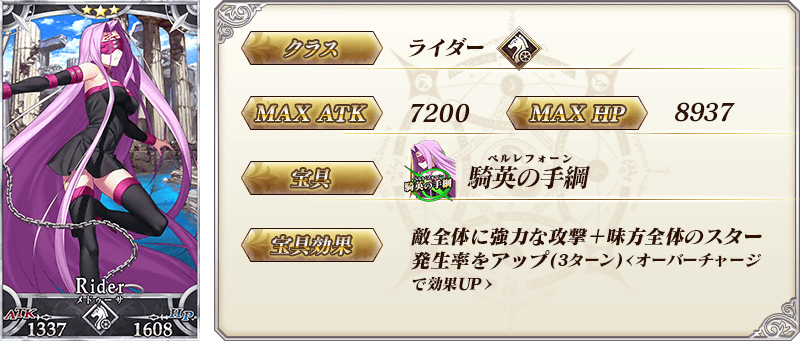
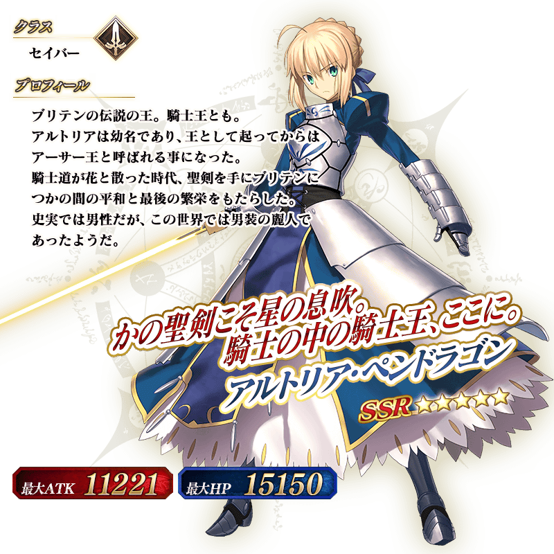
※上述「★5(SSR)阿爾托莉亞・潘德拉剛(Saber)」的立繪為靈基再臨第2階段。
介紹阿爾托莉亞・潘德拉剛(Saber)、阿爾托莉亞・潘德拉剛〔Alter〕(Saber)、海克力斯、美杜莎(Rider)的寶具演出！
在「Fate/Grand Order」官方網站內的公告中，公開了「★5(SSR)阿爾托莉亞・潘德拉剛(Saber)」「★4(SR)阿爾托莉亞・潘德拉剛〔Alter〕(Saber)」「★4(SR)海克力斯」「★3(R)美杜莎(Rider)」的寶具演出。敬請確認。